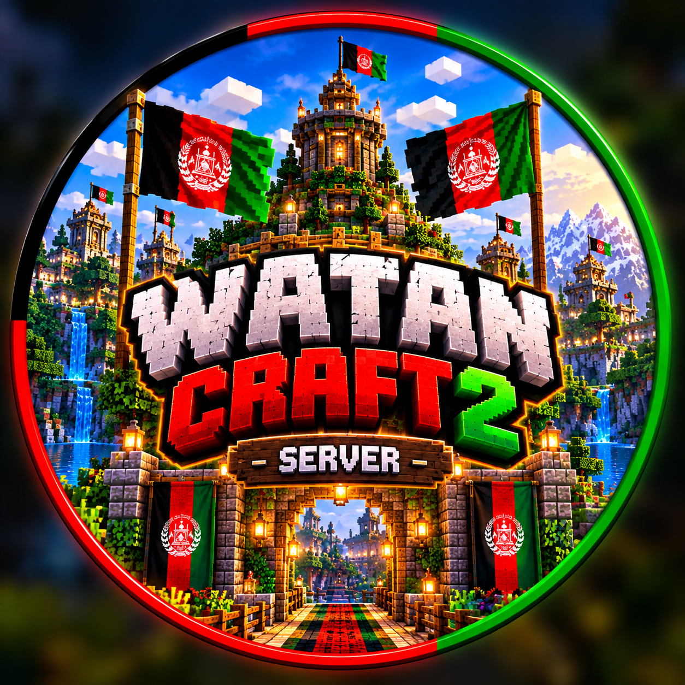

رقابت و نبرد
با دوستانت رقابت کن و مهارتهای ماینکرافتیات را نشان بده.
01
WATAN CRAFTوطن کرفت ۲ ورود به سرور ↗به وطن کرفت ۲ خوش آمدی؛ جایی برای ماجراجویی، ساختن، رقابت و بازی با دوستانت. ماجراجویی تو از همینجا شروع میشود!
آدرس سرور را کپی کن و در Minecraft وارد شو.
سرور وطن کرفت ۲
watancraft2.aternos.me
16079
برای ورود، سرور باید در Aternos روشن باشد. وضعیت آنلاین واقعی در این صفحه بررسی نمیشود.
دنیای خودت را در وطن کرفت بساز.
با دوستانت رقابت کن و مهارتهای ماینکرافتیات را نشان بده.
01جهان را بگرد و ماجراجوییهای تازهای کشف کن.
02ایدههایت را با بلوکها به سازههای جذاب تبدیل کن.
03با دوستانت همکاری کن و از بازی گروهی لذت ببر.
04مهارتت را افزایش بده و برای پیروزی تلاش کن.
05به جمع بازیکنان وطن کرفت بپیوند.
06وارد Multiplayer یا Servers شو.
IP و پورت را در قسمت مربوط وارد کن.
سرور را انتخاب کن و Join Server را بزن.
برای تجربهای بهتر، به بازیکنان دیگر احترام بگذار.
با بازیکنان محترمانه رفتار کن.
از تقلب و ابزارهای غیرمجاز استفاده نکن.
رمز عبور و اطلاعات خصوصی خودت را به کسی نده.
قوانین بازی و دستورهای مدیران را رعایت کن.
ما را در شبکههای اجتماعی دنبال کن و به جامعهٔ AFK_GROUP بپیوند.
آدرس را کپی کن، دوستانت را خبر کن و وارد Watan Craft 2 شو.